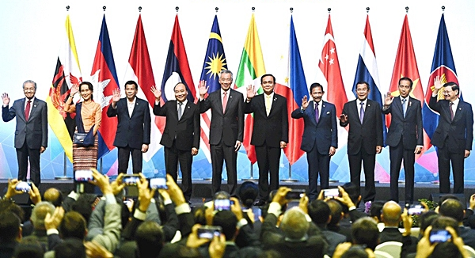

.png)



Sustainable Development Goals (SDGs) atau Tujuan Pembangunan Berkelanjutan memiliki pengaruh yang signifikan terhadap kerja sama antarnegara. SDGs merupakan agenda global yang disepakati oleh negara-negara anggota PBB pada tahun 2015 untuk mencapai pembangunan berkelanjutan pada tahun 2030. Terdiri dari 17 tujuan utama, SDGs bertujuan untuk mengatasi berbagai tantangan global seperti kemiskinan, ketidaksetaraan, perubahan iklim, dan pembangunan ekonomi yang inklusif.
Mendorong kolaborasi global, mengintegrasikan kebijakan dan program, mengatasi tantangan global bersama, dan mendorong inovasi serta transfer teknologi.
Contoh nyata : Kesepakatan Paris (2015): Contoh nyata dari kerja sama global untuk mengurangi dampak perubahan iklim. Proyek Belt and Road Initiative (BRI): Inisiatif ini sering dikaitkan dengan upaya pencapaian SDGs, khususnya dalam pembangunan infrastruktur dan pengentasan kemiskinan. Global Vaccine Alliance (GAVI): Kolaborasi internasional untuk meningkatkan akses vaksin, mendukung Tujuan 3 SDGs.